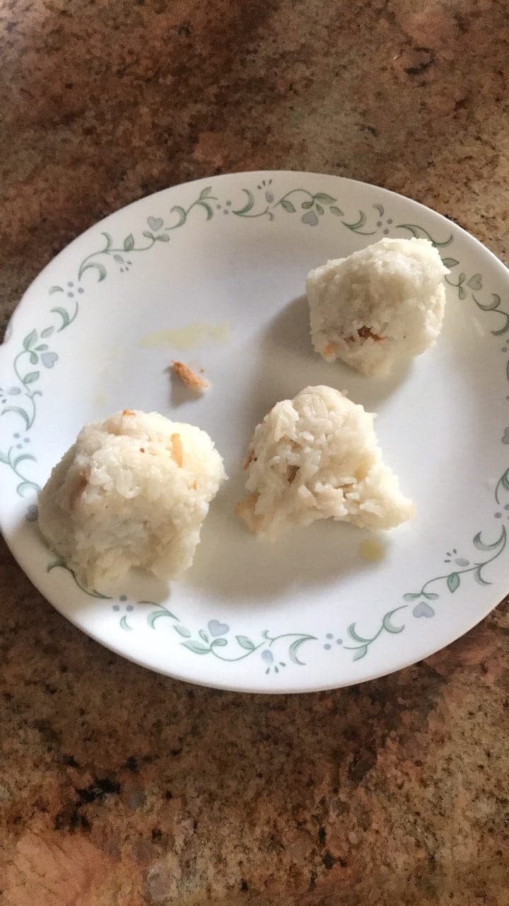
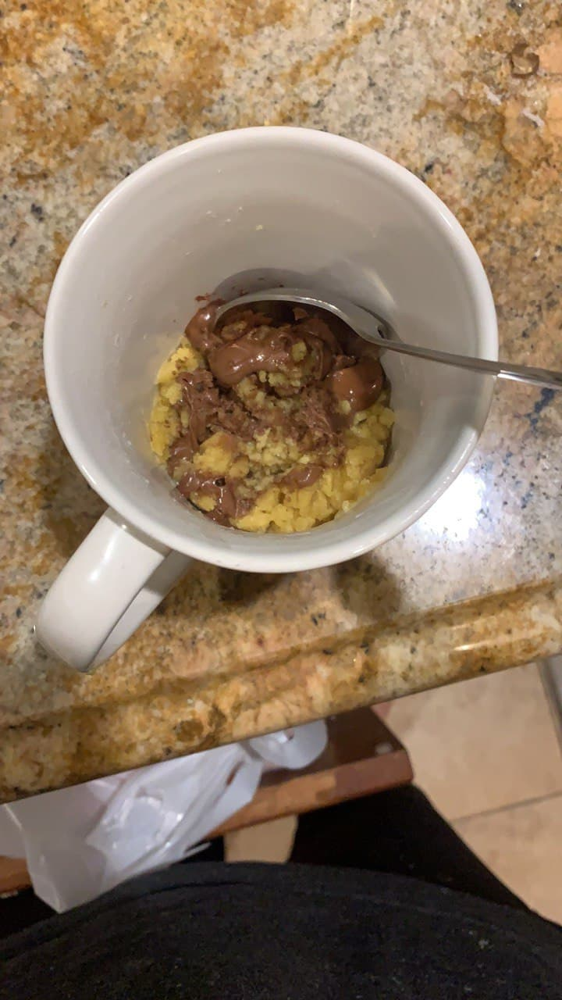
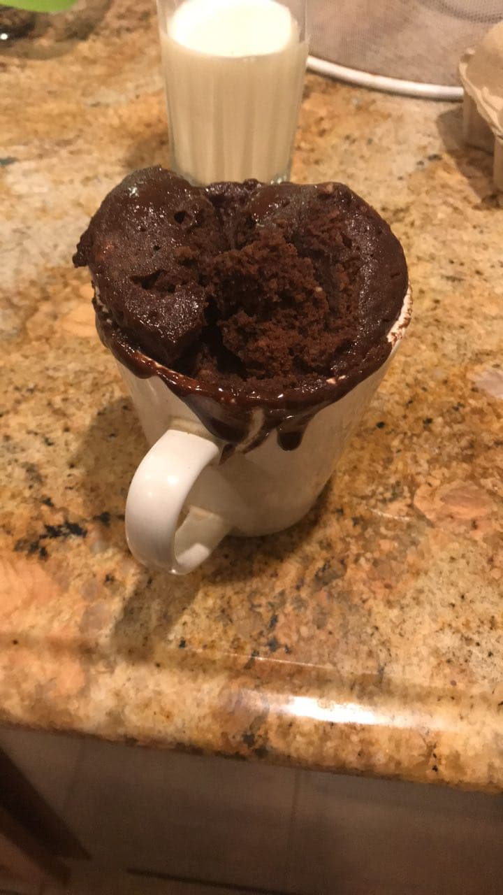

Alright, this is going to be the last time I try out cooking just to post something on this blog. It's way too much effort just to keep this dead website alive. Here's some weird rice pastry I made. I think there's meat inside and I just wrapped it with rice on the outside using saran wrap or something. I don't even remember what recipe I followed. It looks about as good as it tastes. I'm done. I'm going to go take a nap or something.
Back on the internet again. This time, I found a post by someone who put the ingredients of a cookie into a mug and then microwaved the contents to make some sort of mug cookie thing. Of course I made it, the work required is way too easy and it would be a shame not to try. It ended up looking nothing like what was on the website, but I guess it didn't taste bad. I wouldn't call it a cookie though.
I was browsing the internet and I came across this wonderful recipe involving microwaved cupcakes in a mug. Seemed easy, but it turns out my incompetence in cooking is worse than I thought.
I had to work on a video with some classmates about nuclear decay. It was pretty terrible.
You can watch the whole thing here if you absolutely insist. I wouldn't recommend it.